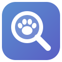

가상 시세로 재현한 화면입니다.
./Rayeonjin
Small, kind software.
Studio RAYEONJIN에서 만든 작은 앱들을 모아 둔 곳입니다.
일상 가까이에 두고 오래 쓸 수 있는 도구를 하나씩 만들고 있어요.
지금은 macOS 앱이 중심이고, 다른 플랫폼의 작업도 준비되는 대로 올립니다.
About
모든 앱은 일상의 실제 필요에서 시작합니다.
충분히 써 보며 다듬은 도구를, 같은 필요가 있는 분도 쓸 수 있게 공개합니다.
소스를 공개하는 이유는 단순합니다.
같은 필요를 가진 누군가가 같은 시행착오에 시간과 노력을 들이지 않기를 바랍니다.
그렇게 아낀 시간으로 다른 문제를 풀고, 그 결과도 공개해 주신다면 더 바랄 게 없겠습니다.
필요에 맞으면 편하게 써 주세요.
의견이 있다면 Telegram으로 남겨주세요. 반갑게 읽겠습니다.
Works
macOS 앱은 완성된 설치 파일 대신 소스로 배포합니다.
무료 Apple 개발 도구로 각자 Mac에서 빌드하며, 방법은 앱마다 설치 가이드에 있습니다.
가상 시세로 재현한 화면입니다.

Find what’s taking up space.
저장 공간이 부족할 때, Mac에 숨어 있는 큰 파일과 폴더를 찾아 용도를 확인합니다.
크기와 마지막 사용 기록을 참고해 정리할 앱을 검토할 수 있습니다.
자동으로 지우거나 휴지통을 비우지 않습니다. 최종 판단은 사용자의 몫입니다.
Local-first notes for macOS.
빠르게 적고, 나중에 다시 이어 붙이는 노트.
Markdown은 필요할 때만 쓰고,
원하면 로컬 AI가 생각 사이의 연결을 찾아줍니다.
원본 텍스트를 지키는 것을 가장 먼저 생각합니다.
새로운 앱과 다른 플랫폼의 작업도 준비되는 대로 이곳에 올립니다.
소식은 GitHub과 Telegram에서 먼저 전합니다.
Dashboard
GitHub 공개 저장소 기준이며, 3시간마다 새로 집계합니다.
| 주 | 커밋 |
|---|
| 저장소 | 최신 버전 | 마지막 업데이트 | 언어 | ★ |
|---|---|---|---|---|
| 불러오는 중입니다. | ||||
History
공개한 작업과 릴리스를 GitHub 기록에서 그대로 가져와 보여줍니다.
FAQ
네. 받고 빌드해서 쓰는 데 비용이 들지 않습니다.
다만 라이선스는 작업마다 다르니, 각 저장소의 LICENSE를 확인해 주세요.
네, 얼마든지요. 포크해서 고쳐 쓰거나, 새로운 걸 만드는 바탕으로 써 주세요.
Uncomew(MIT)와 MemoWeaver(Apache-2.0)는 상업적 이용도 가능합니다.
저작권·라이선스 고지만 남겨 주세요.
Catoshi는 비상업적 개인 사용 범위에서만 고치고 나눌 수 있어요.
무언가 만들게 되면 Telegram으로 알려 주세요. 반갑게 구경하겠습니다.
해당 작업의 GitHub 저장소나 Telegram으로 알려주세요.
사용 중인 버전과 환경, 증상과 오류 메시지를 함께 적어주시면 큰 도움이 됩니다.
응답 시간은 보장하지 못하는 점 양해 부탁드려요.